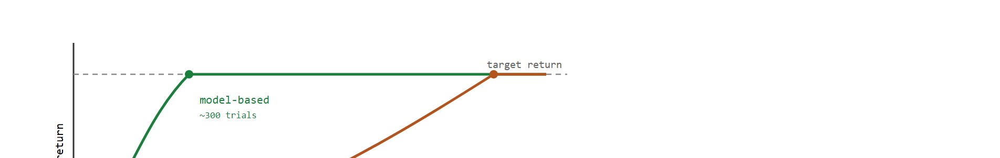
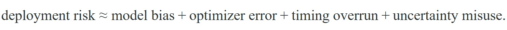

The most persuasive sample-efficiency plot is the one that survives contact with failure analysis.
A Budget-Conscious MPC Loop
This section builds on the model-free versus model-based trade-off introduced in section 37.1 and the uncertainty-awareness discussion in section 36.4. The failure modes catalogued here, particularly model bias and timing overruns, are central to Chapter 38, which shows how latent world models mitigate some of these risks. The deployment audit perspective recurs in Part 11 alongside safety and robustness evaluation in section 54.1.
A robot learns a new manipulation task in forty real trials while its model-free sibling is still on trial four hundred. That headline number is exactly why model-based RL dominates sample-efficiency leaderboards, and exactly why it can fool you: the same learned world model that accelerated training will confidently predict motions that physically cannot happen once contact conditions shift. As of 2024, as embodied AI moves from simulation into factories and homes, the gap between benchmark efficiency and real deployment survival is typically wider than leaderboard numbers alone suggest. Work through this section and you will understand where the gains genuinely come from, which failure modes erase them, and how to audit an efficiency claim before trusting it in the field.
Efficiency claims are incomplete until they are paired with a failure ledger. Saved episodes mean little if the saved method breaks when latency, contact, or shift actually matter.
Squeeze one real robot trial for everything it is worth and it can teach your policy a dozen times over, which is the entire trick behind model-based sample efficiency: methods reuse real experience by either planning through a learned model or generating synthetic targets from imagination rollouts, so one transition can contribute to multiple policy-improvement updates rather than being consumed only once. The practical difference is striking: a model-free agent learning a manipulation task may need 2,000 real robot trials to reach acceptable performance, while a model-based counterpart reaches the same threshold in 300. That is the efficiency story as introduced in the model-free versus model-based trade-off analysis. Figure 37.5B plots both learning curves on the same axes so the horizontal gap between them, the sample-efficiency advantage, is visible directly.

But the same mechanism creates new failure terms:

A serious evaluation must report both sample efficiency and this risk ledger on the same matched panel. Each of the four terms above gets its own treatment below: model bias first because it compounds the others, then optimizer error and timing overrun in the failure-mode table, and uncertainty misuse where it connects back to section 36.4.
Trace through the deployment-risk decomposition with two candidate planners measured on the same panel (control period 20 ms, target return 0.80). Planner A reaches target in 300 real episodes; Planner B reaches it in 500. Now read the ledger terms. Planner A: held-out rollout error 0.04 (model bias 0.04), candidate-score spread across replans 0.02 (optimizer error), p95 planner latency 26 ms which exceeds the 20 ms period so timing overrun fires at 0.30, uncertainty-coverage miss rate 0.05. Summed risk = 0.04 + 0.02 + 0.30 + 0.05 = 0.41. Planner B: model bias 0.06, optimizer error 0.02, p95 latency 15 ms so timing overrun = 0.00, uncertainty miss 0.05. Summed risk = 0.06 + 0.02 + 0.00 + 0.05 = 0.13. Planner A wins on raw episodes (300 versus 500) but loses on the ledger (0.41 versus 0.13) because its single fast plan blows the control period. The audit conclusion flips once the failure terms are co-computed, which is exactly why episode count alone is not decision-grade.
This is where many benchmark stories become misleading. A method can hit target return quickly because the benchmark rewards an easy strategy that never exposes the hard parts of the dynamics, such as sparse collisions, rare slips, or recovery after contact surprises (cases where the real world departs from the conditions the model was trained on, often called distribution shift). If the evaluation panel does not include those cases, the sample-efficiency gain is real but incomplete. For embodied systems, incomplete often means unsafe.
What happens when the robot confidently follows its world model into a physical state it has never encountered? That is the everyday experience of a planner working at the edge of its training distribution. A model that was never wrong inside training has no way to announce when it starts being wrong outside it.
Model bias deserves particular attention because it silently multiplies every other entry in the table. A learned dynamics model only fits the transitions the robot has seen; it does not represent physical law. When the planner queries state-space regions the robot never visited during training, the model extrapolates. Extrapolation in high-dimensional dynamics is frequently wrong in physically meaningful ways: predicted torques violate joint limits, predicted contacts omit friction, and predicted slips ignore surface texture. A robot acting on those predictions can apply damaging forces, overbalance, or execute motions that are kinematically infeasible.
The mechanism is gradient-driven compounding. During planning, the optimizer finds action sequences that minimize predicted cost under the model. If the model assigns low cost to a trajectory through an unvisited region, nothing inside the planner stops it from selecting that trajectory. Each planning step shifts the robot slightly into lower-data territory, where model error grows, so the next plan starts from an even less-covered state. Real robots experience this as progressive drift. The first few steps look reasonable, then behavior degrades abruptly once the robot crosses the implicit boundary of its training distribution. In practice, a higher-capacity planner with a longer horizon tends to drift further and faster than a shallow one, because its optimizer searches a larger space of candidate trajectories and is correspondingly more likely to find a low-cost corridor that threads deep into unvisited state space before the model's errors grow large enough to trigger any internal alarm.
Think of a hiker navigating by a hand-drawn map that only covers the valley they trained in. Each step toward the map's edge feels fine because the terrain looks plausible, but the map has no detail there, so small errors in the sketched contours compound: a trail that looks passable veers off a cliff the moment the hiker steps past the last surveyed landmark. Gradient-driven compounding works the same way: the planner follows the path of least predicted cost, nudging the system one step further into unmapped territory each round, until the model's errors are large enough to send the robot somewhere physically catastrophic.
The table below catalogues the failure modes that recur across model-based deployments, pairing each with its typical symptom and the diagnostic artifact you can use to detect it.
| Failure mode | Typical symptom | Diagnostic artifact |
|---|---|---|
| Model bias | Planner prefers impossible trajectories | Held-out rollout traces and model-versus-real overlays |
| Optimizer collapse | Costs vary wildly across replans | Candidate-score histograms and latency logs |
| Timing overrun | Stale first action reaches the robot | Controller period versus planning time chart |
| Uncertainty misuse | Unsafe confidence in unseen states | Coverage audit and override log |
To catch timing overruns before hardware deployment, set torch.backends.cudnn.benchmark = False and profile your planner with torch.utils.benchmark.Timer at the actual batch size and horizon used during inference, not at training batch sizes. Planning kernels often run 2 to 4 times slower on small single-step batches than on training batches, so a planner that looks fast during training can silently exceed the control period (typically 10 to 50 ms on real robots) at inference time. Log the 95th-percentile latency over at least 500 consecutive steps on the target hardware, and add a hard assertion that rejects any planner whose p95 exceeds 80 percent of the control period.
PETS (Chua et al., 2018) demonstrated sample efficiency concretely on MuJoCo locomotion tasks: it reached the performance of a model-free Soft Actor-Critic (SAC) baseline using roughly 5 to 10 times fewer environment interactions, often achieving comparable returns in 300 to 500 real episodes where SAC required 2,000 or more. TD-MPC2 (Hansen et al., 2023) extended this to harder continuous-control benchmarks, reporting up to 10x sample reduction on humanoid tasks while keeping planner latency under 30 ms per step on a single GPU. These numbers are the baseline to beat, and they also set the timing budget that downstream robotics deployments must respect.
Those published budgets only become trustworthy once you can reproduce them in a single reportable artifact, so the natural next step is to package efficiency and its failure terms together. The next code fragment prints a compact evidence card for one benchmark comparison. This is the minimum artifact that should accompany a "sample efficient" claim.
# Build one evidence card for a sample-efficiency claim.
from dataclasses import asdict, dataclass
@dataclass
class EvidenceCard:
target_return: float
real_episodes_to_target: int
planner_ms: int
heldout_rollout_error: float
dominant_failure: str
def as_row(self) -> dict[str, object]:
return asdict(self)
card = EvidenceCard(
target_return=0.80,
real_episodes_to_target=6,
planner_ms=18,
heldout_rollout_error=0.041,
dominant_failure="model_bias_under_contact_shift",
)
print(card.as_row()){'target_return': 0.8, 'real_episodes_to_target': 6, 'planner_ms': 18, 'heldout_rollout_error': 0.041, 'dominant_failure': 'model_bias_under_contact_shift'}
Read the deployment numbers as a runtime budget: model inference, optimization, safety filtering, and actuator command must fit inside the control period with margin for logging and fault handling.
EvidenceCard dataclass that bundles real-episode count, planner latency, held-out rollout error, and dominant failure mode into one printable dict, so a sample-efficiency claim ships with its failure ledger attached.Use versioned JSON or dataclass exports for evidence cards, and store them next to replay videos or plotted traces. Pair that with Weights & Biases, MLflow, or a plain artifact directory keyed by seed and panel. This habit makes it much easier to compare planners, simulators, or datasets without losing the failure story.
A convincing audit compares model-based and model-free baselines on the same reset panel, with the same observation contract, same seed count, and same target-return threshold. Then it adds deployment-facing fields that most papers omit: control period, average planner milliseconds, percentage of aborted rollouts, and the first failure mode observed during shift. That single table often explains more than several reward curves.
Even a table that captures every deployment field still measures only what happens at run time, and one large cost sits entirely off that ledger. Readers should also separate efficiency from engineering burden. A method that uses fewer real episodes but requires days of model tuning, fragile horizon schedules, and constant calibration babysitting is suffering from the hidden cost of model maintenance, and that cost may still make it the right choice for scarce-data robotics, but the trade should be stated explicitly.
For every efficiency claim, save target return, real interaction count, planner latency, held-out model error, and at least one tagged failure episode. If any of those fields are missing, the comparison is incomplete.
Benchmark gains can hide deployment regressions. A model-based method that learns fast in simulation but overruns the control period or misranks rare contact states is not ready just because its reward curve rose sooner.
A common assumption is that "fewer real-world interactions" means "cheaper and easier to train." In embodied AI, that assumption is wrong. Every saved environment episode gets replaced by model fitting, synthetic rollouts, uncertainty estimation, and repeated replanning. Each of those steps carries its own compute, memory, and engineering overhead. On a physical robot, the team must retrain or fine-tune the world model whenever the environment shifts. That ongoing maintenance cost never appears in an episode count. Model-based methods trade interaction budget for compute budget and model-maintenance burden. Whether that trade is worthwhile depends on data scarcity, available compute, and deployment stability, not on episode counts alone.
A drone policy that reaches competent flight with half the real data of a model-free baseline may still be unacceptable if its planner occasionally stalls under wind-gust outliers. A warehouse arm may learn faster but remain unusable if uncertainty is narrow exactly when the box geometry changes.
Google DeepMind's RoboCat and the Dreamer-v3 line both exploit exactly the sample-efficiency advantage discussed here: Dreamer-v3 famously collected diamonds in Minecraft from scratch and trained real-robot pick-and-place behaviors in a few hours of interaction by planning inside a learned latent world model. The teams ship the same failure-ledger discipline alongside the gains, gating deployment on held-out rollout error and planner latency rather than on episode count alone, because a model that imagines an infeasible grasp is more dangerous than a slow one.
Goal: measure the real-episode savings of a model-based agent and then catch the model-bias failure that the savings hide. Tools: Python, Gymnasium (Pendulum-v1), NumPy, and Matplotlib; optionally MBRL-Lib for a ready PETS implementation. Setup: train a model-free PPO baseline (Stable-Baselines3) and a simple model-based agent that fits a small ensemble dynamics model and plans with random-shooting MPC (sampling many random action sequences and keeping the one the model predicts will cost least, rather than optimizing the sequence with gradients). Plot return versus real environment steps for both on one panel. What to vary: the planning horizon (1, 5, 15, 30 steps) and the ensemble size (1 versus 5 models). What to observe: the model-based curve should hit target return in roughly 5 to 10 times fewer real steps, but at horizon 30 with a single-model ensemble you should see the optimizer exploit model error, returns become erratic, and held-out one-step prediction error climb in exactly the states the planner visits most. Log p95 planner latency per step and confirm it grows with horizon. Expect about 20 to 30 minutes once the environment is installed.
This section connects to deployment and safety material in Chapter 54 and Chapter 55.
Direction 1: Tokenized world models for long-horizon planning. Large-scale tokenized world models, such as Genie 2 (Google DeepMind, 2024) and DIAMOND (Alonso et al., 2024, NeurIPS 2024 Outstanding Paper), show that training on diverse video data enables planners to generalize across contact configurations they never directly experienced. The sample-efficiency argument shifts from "fewer robot trials" to "broader transfer per trial," but model-bias failure modes follow the same pattern: token-level prediction errors compound across a 32-step horizon in ways that are invisible until the robot attempts a novel grasp angle.
Direction 2: Differentiable simulation as a privileged world model. Projects such as ManiSkill3 (Gu et al., 2025) and PhysGen (CMU Robotics Institute, 2024) integrate GPU-parallelized differentiable physics directly into the planning loop, replacing a learned dynamics model with an analytic one. This eliminates model bias on in-distribution contacts but introduces a new failure mode: simulation gap, where unmodeled friction, deformable objects, or compliant joints cause the differentiable simulator to give misleading gradients in exactly the high-stakes contact states that matter most.
Direction 3: Adaptive replanning under distribution shift. TD-MPC2 extensions and Dreamer-v3 fine-tuning protocols (Hafner et al., 2024) explore continual world-model updates during deployment, recalibrating the model with each new transition rather than treating it as fixed. Early results cut distribution-shift failure rates by roughly half on tabletop rearrangement, but introduce optimizer instability when the update rate outpaces data diversity.
So far: tokenized world models trade "fewer robot trials" for "broader transfer per trial" but still compound token-level errors over long horizons; differentiable simulators remove learned-model bias on known contacts but introduce a simulation-gap risk of their own; and adaptive replanning cuts distribution-shift failures by continually recalibrating, at the cost of new optimizer instability. All three keep the same sample-efficiency-versus-failure-ledger trade-off, just relocated to a different part of the pipeline.
Open problem for PhD students: None of these three directions has a principled stopping criterion. How much real data does a deployed robot need before it can safely extend its planner horizon by one step, without reintroducing the model-bias failures that sample efficiency was supposed to eliminate? A tractable sub-problem is to derive an adaptive-horizon rule that uses held-out rollout error and p95 latency as a joint safety gate, verified on at least two real robot platforms under contact-distribution shift.
If a model-based method reaches target return with fewer episodes but twice the planner latency and worse shift robustness, would you still call it better? What additional evidence would you need?
Sample efficiency is the opening argument. Failure analysis is the cross-examination.
Model-based RL often earns its place through data efficiency, but only a joint audit of efficiency, bias, uncertainty, and timing tells you whether the method is truly better.
Beginner (weekend): Build a sample-efficiency comparison script using Gymnasium's CartPole-v1 environment: train a model-based agent with a simple learned linear dynamics model and a model-free agent (e.g., Proximal Policy Optimization (PPO) from Stable-Baselines3), then plot reward versus real environment steps on the same panel and output an evidence card with planner latency and held-out model error. The key challenge is keeping the evidence card fields complete so the comparison is honest rather than just comparing reward curves.
Intermediate (1 to 2 weeks): Implement a PETS-style ensemble dynamics model in PyBullet or MuJoCo (via Gymnasium's HalfCheetah-v4) and add a timing-overrun detector that logs p95 planner latency over 500 consecutive steps and asserts it stays below 80 percent of the control period. The key challenge is profiling at the actual single-step inference batch size rather than training batch size, since planning kernels typically run 2 to 4 times slower in that regime and the mismatch is easy to miss until hardware deployment.
Design an evidence card for a model-based benchmark in your domain. Which fields are mandatory before you would believe the sample-efficiency claim?
Hansen, N. et al.. "TD-MPC2: Scalable, Robust World Models for Continuous Control." (2023). https://arxiv.org/abs/2310.16828
A modern frontier baseline worth studying for both gains and remaining risks.
Janner, M. et al.. "When to Trust Your Model: Model-Based Policy Optimization." (2019). https://arxiv.org/abs/1906.08253
A practical efficiency reference that also foregrounds model-trust limits.
Chua, K. et al.. "Deep Reinforcement Learning in a Handful of Trials using Probabilistic Dynamics Models." (2018). https://arxiv.org/abs/1805.12114
A standard reference for strong sample efficiency under uncertainty-aware planning.
Continue to Chapter 38: Latent World Models, where this contract becomes the input to the next embodied capability.